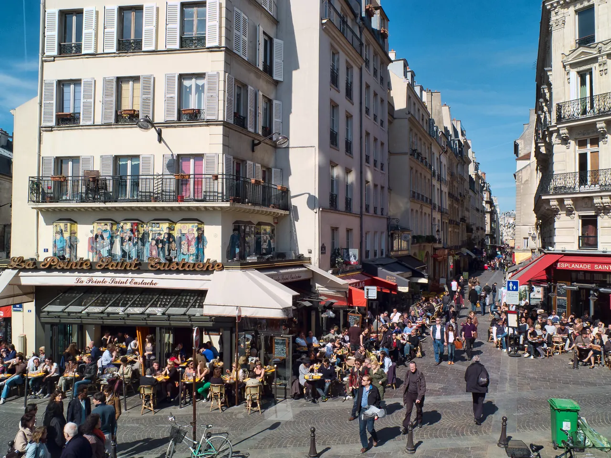

{kind=link}
관광·미술관
Nous avons déjà des billets.
이미 표가 있습니다.
누 자봉 데자 데 비예

파리 2구와 1구의 경계, 레 알(Les Halles) 지구 북쪽에 자리 잡은 파리에서 가장 활기차고 역사 깊은 보행자 전용 전통 식료품 미식 거리(Rue Montorgueil)다.
과거 노르망디 해안에서 갓 잡은 굴과 생선, 프랑스 전역의 농산물이 중앙 시장인 레 알로 들어오던 유서 깊은 통로였으며, 클로드 모네가 1878년 축제 날 프랑스 삼색기로 가득 찬 거리를 그린 명작 『몽토르게이 거리(Musée d'Orsay 소장)』의 실제 무대이기도 하다.
1730년 루이 15세의 궁정 파티시에였던 니콜라 스토레가 문을 연 파리에서 가장 오래된 베이커리 스토레(Stohrer)를 비롯해, 유서 깊은 치즈 전문점, 푸아그라 및 트러플 상점, 생선가게, 꽃집, 그리고 파리지앵들이 에스프레소나 맥주를 즐기는 야외 비스트로 테라스가 조약돌 바닥을 따라 끝없이 펼쳐진다.
"관광지용 상점이 아니라, 파리 시민들의 일상적인 미식 장보기와 테라스 카페 문화가 18세기 석조 파사드 아래서 생생하게 살아 숨 쉬는 가장 활기찬 보행자 거리다." 스토레에서 바바 오 롬(Baba au rhum)이나 에클레어를 맛보고, 몽토르게이 거리를 따라 내려오며 레 알이나 부르스 드 코메르스로 이어지는 45~60분 산책 코스로 적합하다.
| 운영시간 | 재확인 |
|---|---|
| 휴무 | 재확인 |
| 예약 | 재확인 |
| 항목 | 상세 정보 |
|---|---|
| 위치 | Rue Montorgueil, 75002 Paris |
| 입장료 | 보행자 거리 무료 |
| 교통 접근 | 메트로 4호선 Étienne Marcel역 / Les Halles역 도보 2분, 메트로 3호선 Sentier역 도보 3분 |
| 연계 동선 | 남쪽 끝에서 Bourse de Commerce(부르스 드 코메르스) 및 Forum des Halles로 직결 (도보 3분) |
| 영업 패턴 | 월요일은 일부 상점이 휴무일 수 있으므로 화요일–일요일 방문 권장 |
Nous avons déjà des billets.
이미 표가 있습니다.
누 자봉 데자 데 비예
On peut prendre des photos ?
사진 찍어도 되나요?
옹 푀 프랑드르 데 포토
Où commence la visite ?
관람은 어디서 시작하나요?
우 코망스 라 비지트

1868년 앙리 라브루스트가 주철 기둥과 9개 도자기 돔으로 완성한 19세기 건축의 걸작 '라브루스트 열람실'과 일반에 전면 무료 개방된 거대한 타원형 '오발 열람실(Salle Ovale)', 프랑스 국립도서관 박물관.

18세기 원형 곡물거래소를 세계적인 건축가 안도 다다오가 노출 콘크리트 원통 실린더로 리노베이션한 현대미술관. 프랑수아 피노 회장의 세계적 현대미술 컬렉션과 1889년 돔 천장 무역 파노라마 프레스코화.

렌조 피아노와 리처드 로저스가 건물 배관과 골격을 외벽으로 노출시킨 20세기 하이테크 건축의 전설이자 유럽 최대 근현대미술관. ⚠ 2025년 가을부터 2030년까지 전면 개보수 공사로 본관 폐관 중.

클로드 모네가 43년간 직접 꽃과 연못을 가꾸며 불후의 『수련』 대작을 창조해낸 살아있는 인상파 캔버스. 초록색 일본식 다리가 걸린 '물의 정원(Jardin d'eau)'과 핑크빛 모네 생가 아틀리에.

1900년 파리 만국박람회를 위해 건립된 45m 높이 아르누보 철골 유리 네이브(Nave)의 기념비적 국립 전시장. 2024 파리 올림픽을 거쳐 리노베이션 완료 후 재개관한 파리 문화 예술의 중심지.

중세 소르본 대학 교수와 학생들이 공용어로 라틴어를 쓰던 데서 유래한 800년 파리 지성의 요람이자 센 강 좌안(Rive Gauche)의 심장. 프랑스 위인들의 성소 팡테옹(Panthéon), 셰익스피어 앤 컴퍼니, 뤽상부르 공원.